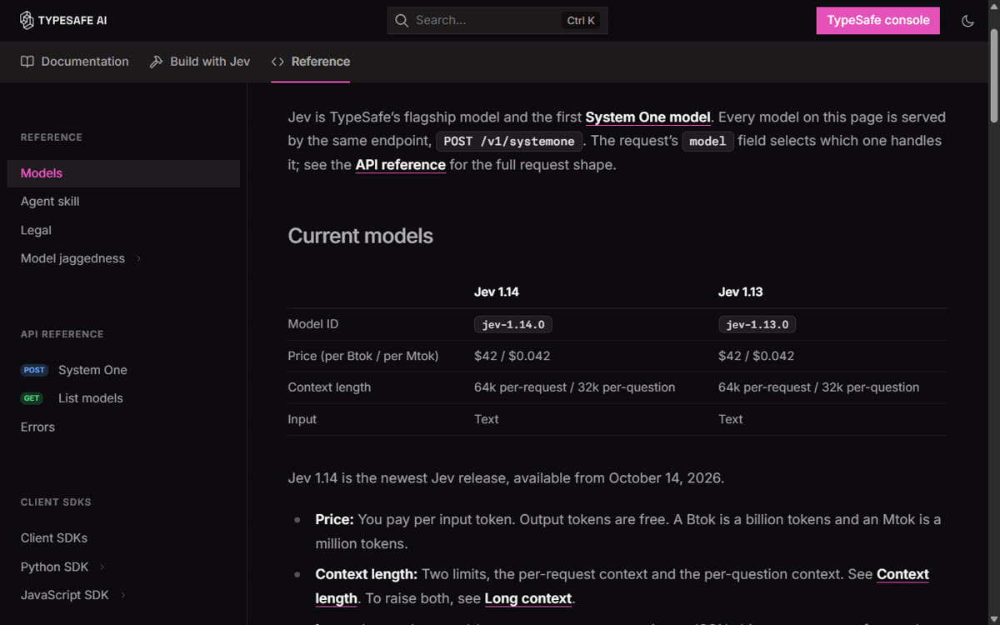
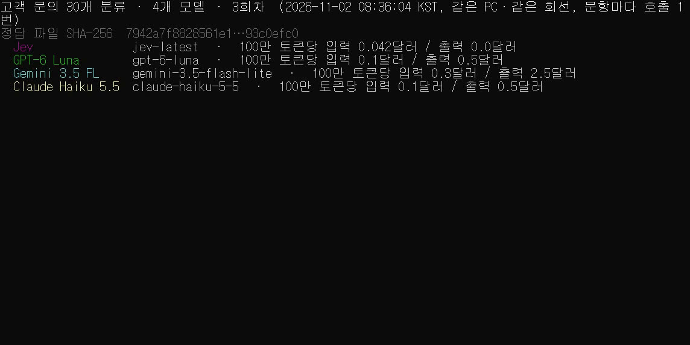
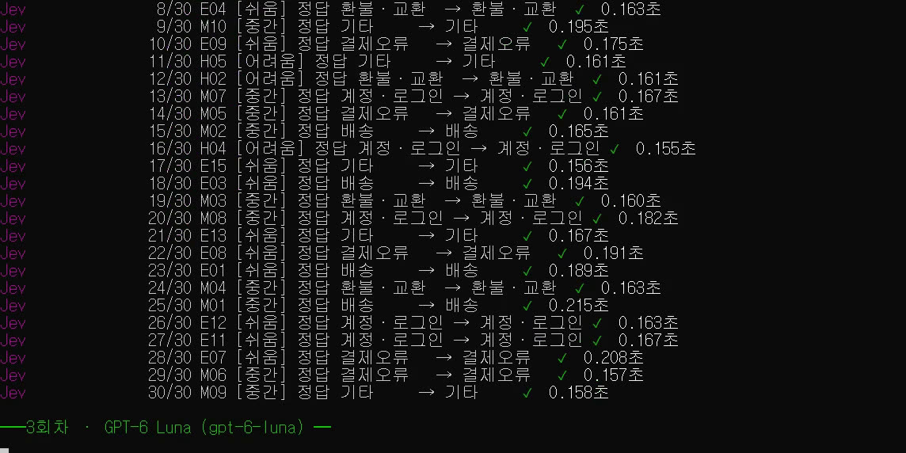
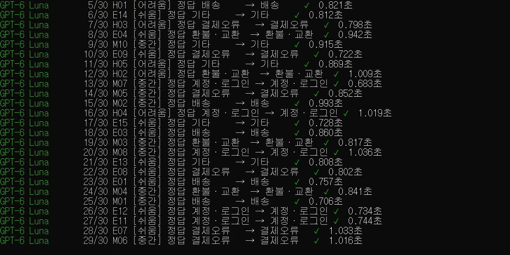
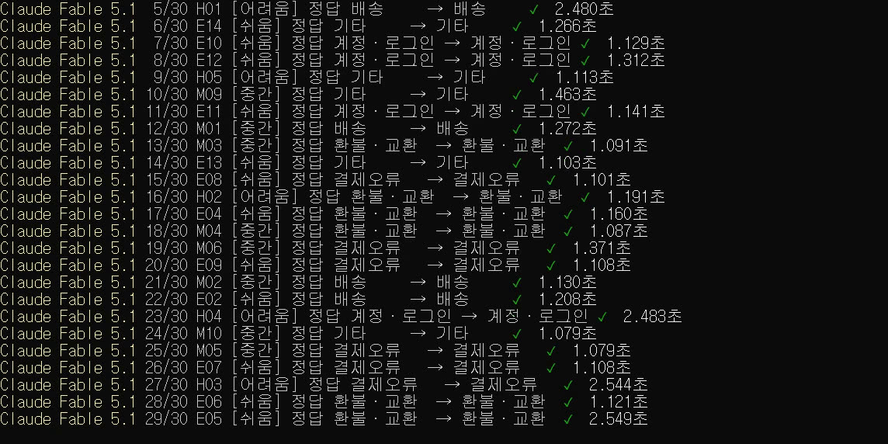
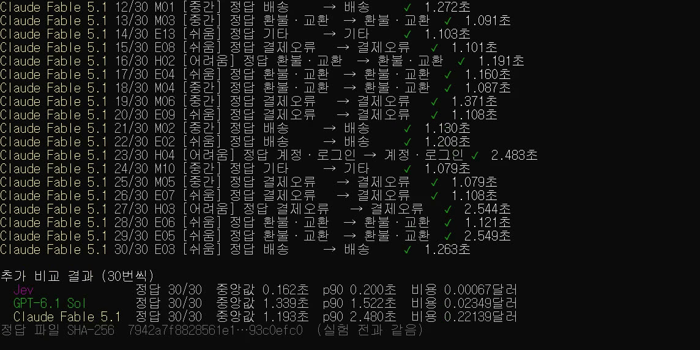
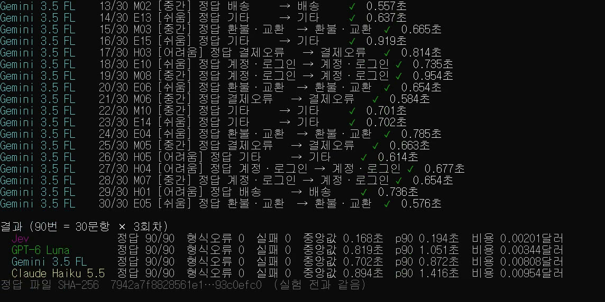

Jev 속도·비용 직접 재 보기: '200배 빠르다'는 8배, 비용은 큰 모델 대비 330배(문의 30개·코드 공개)
실행 환경 및 확인 한계 · 직접 실측(모델 6개 · 450번 호출) · 이 글의 결과는 2026-11-02 오전 윈도우 11 PC 한 대·한국 회선 한 곳에서 잰 실제 기록(고객 문의 분류 30문항)이며, 다른 일·모델 설정·네트워크 환경에서는 다를 수 있습니다.
'200배 빠르고 400배 싸다'는 AI, Jev(제브) 를 들어 보셨나요? 정말 그런지 궁금해서 같은 가상 고객 문의 30개를 Jev와 다른 AI 모델 5개에 똑같이 맡기고, 속도·비용·정답률을 직접 재 봤어요. 따라 할 수 있게 문의 30개, 정답, 측정 코드까지 이 글에 모두 올려 둡니다.
2026년 11월 2일 오전, 저희 윈도우 11 PC 한 대(한국 집 회선)에서 이미 쓰던 API 계정으로 직접 잰 결과입니다. 협찬은 없습니다.
명령어·설정·실패 해결표
| 구분 | 내용 | 해결 |
|---|---|---|
| 명령어 | python --version | |
| 명령어 | python bench_public.py --probe | |
| 명령어 | python bench_public.py --run |
한눈에 보기
| 질문 | 출처 주장 | 저희 측정 | 판정(실험 전에 정한 규칙) |
|---|---|---|---|
| 얼마나 빠를까? | 200배 빠르다 | 작은 모델보다 4.2~5.3배, 큰 모델보다 7.4~8.3배 빠름 | 우리 조건에서는 재현되지 않음 |
| 얼마나 쌀까? (작은 모델과) | 400배 싸다 | 1.7~4.7배 쌈 | 우리 조건에서는 재현되지 않음 |
| 얼마나 쌀까? (큰 모델과) | 400배 싸다 | GPT-6.1 Sol보다 35배, Claude Fable 5.1보다 330배 쌈 | Fable만 '방향은 같으나 주장보다 작음' |
| 빠르면 틀릴까? | - | 6개 모델 모두 만점 | 차이 없음(문제가 쉬웠음) |
- 판정 규칙: 측정 배수가 주장 이상이면 '주장 이상 확인', 주장의 절반 이상이면 '방향은 같으나 주장보다 작음', 절반 미만이면 '우리 조건에서는 재현되지 않음'.
- 모든 판정은 고객 문의 분류 30문항, 저희 PC·회선 기준이에요. 다른 일·다른 환경에서는 다를 수 있어요.
'직접 해 봄'과 '문서 기준' 구분
- ✅ 직접 해 봄: 저희 PC에서 실제로 호출하고 결과 파일과 화면 녹화를 남긴 것
- 📄 문서 기준: 각 회사 공식 문서에 적힌 가격·설명을 옮긴 것
Jev가 뭔가요? (아주 쉽게)
보통 AI(ChatGPT, Claude, Gemini)는 글을 써 주는 AI예요. Jev는 다르게 객관식 문제만 푸는 AI라고 생각하면 쉬워요. 보기를 주면 그중 하나를 고르고, 각 보기가 정답일 확률을 돌려줘요. 그래서 대화나 글쓰기는 못 해요. (📄 문서 기준: TypeSafe는 이런 모델을 'System One 모델'이라고 불러요)
- 가격: 입력 100만 토큰당 0.042달러, 출력은 무료 (📄 docs.typesafe.ai/models, 11/02 확인)
- 공식 블로그가 말하는 응답 시간: 0.07초~0.5초 (📄 TypeSafe 블로그)

'200배·400배'는 어디서 나온 말일까?
- 노마드 코더 '200배 빠르고 400배 저렴한 AI⚡️직접 써본 결과?'(2026-10-18): 영상 첫 부분에서 "GPT와 Fable보다 거의 200배 빠르고 400배 넘게 싸다"고 소개해요. 같은 영상 2:55쯤에는 가격 예시로 GPT-6 Luna(입력 0.10달러/출력 0.50달러)와 Jev(입력 0.04달러, 출력 무료)를 비교해요.
- 조코딩 'AI뉴스 - Jev 열풍 …'(2026-09-21): "20배에서 200배 빠르고, 40배에서 400배 싸다"고 전해요.
두 영상의 화면이나 내용을 가져다 쓰지 않고, 저희가 따로 측정했어요. 링크는 글 아래에 있어요.
어떻게 쟀나요? (공정하게 맞춘 조건)
- 문의 30개를 직접 썼어요. 실제 고객 정보는 하나도 없는 가상 문의예요. 쉬운 것 15개, 두 가지가 섞인 중간 10개, 반어법·오타·긴 글인 어려운 것 5개.
- 보기(라벨)는 5개로 고정했어요. 배송 / 환불·교환 / 결제오류 / 계정·로그인 / 기타.
- 정답을 실험 전에 파일로 고정했어요. 정답 파일의 지문 같은 값(SHA-256 해시)을 실험 시작 화면에 찍고, 끝난 뒤에도 같은지 확인했어요. 값:
7942a7f8828561e1dedb03c27352ead41e4da1feae38cde98729d53293c0efc0(실험 전후 같음 ✅)
- 모든 모델에 같은 지시문과 같은 보기 설명을 줬어요. 문의 1개당 호출 1번, 순서대로(동시에 여러 개 보내지 않음).
- 작은 모델 4개(Jev 포함)는 30문항을 3번씩 돌렸어요. 회차마다 모델 순서와 문항 순서를 바꿨고, 첫 호출(준비 운동)은 결과에서 뺐어요. → 모델마다 90번
- 큰 모델 2개(GPT-6.1 Sol, Claude Fable 5.1)는 30문항을 1번씩 따로 돌렸고, 같은 시간에 Jev도 다시 30번 쟀어요.
- 시간은 요청을 보내기 직전부터 답을 다 받을 때까지 잰 값이에요(한국 → 각 회사 서버 왕복 포함). 비용은 응답에 적힌 실제 토큰 수 × 공식 단가로 계산했어요.

| 모델 | 100만 토큰당 입력/출력(달러) | 설정 | 횟수 |
|---|---|---|---|
| Jev (jev-1.14.0) | 0.042 / 무료 | choice 질문 | 90번 + 30번 |
| GPT-6 Luna | 0.10 / 0.50 | 추론 끔, JSON 형식 고정 | 90번 |
| Gemini 3.5 Flash-Lite | 0.30 / 2.50 | 생각 최소, temperature 0, JSON 형식 고정 | 90번 |
| Claude Haiku 5.5 | 0.10 / 0.50 | 기본값, 형식 고정(도구 호출) | 90번 |
| GPT-6.1 Sol | 2 / 10 | 기본값, JSON 형식 고정 | 30번 |
| Claude Fable 5.1 | 10 / 50 | 기본값, JSON 형식 고정 | 30번 |
결과 1. 속도: 정말 200배 빠를까?
Jev는 30개를 다 고르는 데 5초 남짓(한 번에 약 0.17초), GPT-6 Luna는 25초 안팎이 걸렸어요. (✅ 직접 해 봄)


| 모델 | 중앙값 | 느린 쪽 10%(p90) | Jev보다 몇 배 느림 |
|---|---|---|---|
| Jev | 0.168초 | 0.194초 | - |
| Gemini 3.5 Flash-Lite | 0.702초 | 0.872초 | 4.2배 |
| GPT-6 Luna | 0.819초 | 1.051초 | 4.9배 |
| Claude Haiku 5.5 | 0.894초 | 1.416초 | 5.3배 |
| Claude Fable 5.1 | 1.193초 | 2.480초 | 7.4배 (같은 시간 Jev 0.162초 기준) |
| GPT-6.1 Sol | 1.339초 | 1.522초 | 8.3배 (같은 시간 Jev 0.162초 기준) |
확실히 Jev가 제일 빨랐어요. 하지만 200배는 물론 그 절반인 100배에도 한참 못 미쳤어요. → 우리 조건에서는 재현되지 않음
결과 2. 비용: 정말 400배 쌀까?
1,000건을 분류한다고 환산한 계산값이에요(실제 청구서 금액은 아직 확인 전).
| 모델 | 1,000건 비용(달러) | Jev보다 몇 배 비쌈 | 한 번 평균 입력 토큰 |
|---|---|---|---|
| Jev | 0.022 | - | 532 |
| GPT-6 Luna | 0.038 | 1.7배 | 315 |
| Gemini 3.5 Flash-Lite | 0.090 | 4.0배 | 204 |
| Claude Haiku 5.5 | 0.106 | 4.7배 | 886 |
| GPT-6.1 Sol | 0.78 | 35배 | 315 |
| Claude Fable 5.1 | 7.38 | 330배 | 674 |
- 작은 모델과는 차이가 작았어요. Jev는 보기 설명까지 함께 읽어서 한 번에 532토큰을 썼고, GPT-6 Luna는 315토큰이었어요. 단가는 약 2.4배 싸지만 토큰을 약 1.7배 더 쓰니 차이가 줄어든 거예요.
- 비싼 큰 모델과는 차이가 컸어요. Claude Fable 5.1 대비 330배는 400배의 절반(200배)을 넘으니 → 방향은 같으나 주장보다 작음. 나머지 비교는 → 재현되지 않음.


결과 3. 정답률: 빠르면 틀릴까?
| 모델 | 정답 | 형식 오류 | 같은 문의 3번 모두 같은 답 |
|---|---|---|---|
| Jev | 90/90 | 0 | 30/30 |
| GPT-6 Luna | 90/90 | 0 | 30/30 |
| Gemini 3.5 Flash-Lite | 90/90 | 0 | 30/30 |
| Claude Haiku 5.5 | 90/90 | 0 | 30/30 |
| GPT-6.1 Sol | 30/30 | 0 | (1번만 함) |
| Claude Fable 5.1 | 30/30 | 0 | (1번만 함) |
모두 만점이었어요. '빠르면 틀린다'는 이 30문항에서는 보이지 않았지만, 문제가 쉬워서 정확도 차이를 가르지 못했다는 뜻이기도 해요.
Jev는 답과 함께 확률을 줘요. 가장 자신 없어 한 문의는 M06 "주문 완료 화면까지 갔는데 주문 내역에는 아무것도 없고 카드 결제 알림만 왔어요"였어요. 결제오류 84~87%, 기타 10~13%로, 정답(결제오류)은 3번 모두 맞혔어요. 이렇게 확률이 낮은 문의를 우선 사람이 다시 보게(기준 확률은 한국어 내 문의로 먼저 검증해야 해요) 하는 식으로 쓸 수 있어요.

문의 30개 전체와 정답
| 번호 | 난이도 | 문의 | 정답 |
|---|---|---|---|
| E01 | 쉬움 | 주문한 지 4일 됐는데 아직 배송 준비 중이라고 떠요. 언제 출발하나요? | 배송 |
| E02 | 쉬움 | 택배 송장번호를 눌러도 조회가 안 돼요. 지금 물건이 어디쯤 있는지 알 수 있을까요? | 배송 |
| E03 | 쉬움 | 배송지를 회사 주소로 바꾸고 싶은데 아직 출발 전이면 변경 가능한가요? | 배송 |
| E04 | 쉬움 | 받은 셔츠 사이즈가 커서 한 치수 작은 걸로 교환하고 싶어요. | 환불·교환 |
| E05 | 쉬움 | 단순 변심으로 반품하면 환불은 며칠 걸리나요? | 환불·교환 |
| E06 | 쉬움 | 상자를 열어 보니 컵이 깨져 있어요. 환불해 주세요. | 환불·교환 |
| E07 | 쉬움 | 결제 버튼을 누르면 '카드 승인 실패'라고만 나오고 결제가 안 돼요. | 결제오류 |
| E08 | 쉬움 | 한 번 결제했는데 카드 문자가 두 번 왔어요. 돈이 두 번 빠져나간 것 같아요. | 결제오류 |
| E09 | 쉬움 | 쿠폰을 적용했는데 결제 금액에는 할인이 빠진 채로 청구됐어요. | 결제오류 |
| E10 | 쉬움 | 비밀번호를 잊어버렸어요. 재설정 메일이 안 와요. | 계정·로그인 |
| E11 | 쉬움 | 로그인하면 '계정이 잠겼습니다'라고 나와요. | 계정·로그인 |
| E12 | 쉬움 | 휴대폰 번호가 바뀌어서 본인 인증 문자를 못 받아요. 회원 정보에서 번호를 바꾸고 싶어요. | 계정·로그인 |
| E13 | 쉬움 | 매장은 주말에도 문을 여나요? 영업시간이 궁금해요. | 기타 |
| E14 | 쉬움 | 이 텀블러는 식기세척기에 넣어도 되나요? | 기타 |
| E15 | 쉬움 | 회사 단체 선물로 200개를 사려고 하는데 대량 구매 담당자와 연락할 수 있을까요? | 기타 |
| M01 | 중간 | 결제는 잘 됐는데요, 도착 예정일이 어제였는데 아직 안 왔어요. 지금 어디쯤 있나요? | 배송 |
| M02 | 중간 | 교환으로 다시 보내 주신다던 새 제품이 일주일째 안 와요. 발송은 된 건가요? | 배송 |
| M03 | 중간 | 배송은 빨리 왔는데 색이 사진과 완전히 달라요. 반품하고 환불받고 싶어요. | 환불·교환 |
| M04 | 중간 | 앱에 로그인이 잘 안 돼서 여기 남겨요. 어제 주문한 거 취소하고 환불해 주세요. | 환불·교환 |
| M05 | 중간 | 환불을 받으려는 게 아니라요, 결제할 때 포인트를 썼는데 포인트도 빠지고 카드로도 전액이 결제됐어요. | 결제오류 |
| M06 | 중간 | 주문 완료 화면까지 갔는데 주문 내역에는 아무것도 없고 카드 결제 알림만 왔어요. | 결제오류 |
| M07 | 중간 | 주문하려고 로그인할 때마다 첫 화면으로 튕겨요. 아이디랑 비밀번호는 맞게 넣었어요. | 계정·로그인 |
| M08 | 중간 | 배송 조회를 하려고 들어갔는데 아이디가 존재하지 않는다고 나와요. 가입한 적 분명히 있어요. | 계정·로그인 |
| M09 | 중간 | 배송이랑 결제는 다 괜찮았어요. 그냥 이 제품 리필용 필터를 따로 파는지 궁금해서요. | 기타 |
| M10 | 중간 | 지난번 교환 때 친절하게 도와주셔서 감사 인사 드리려고 글 남겨요. 직원분 칭찬 부탁드립니다. | 기타 |
| H01 | 어려움 | 와 대단하네요, 2주째 '배송 중'이라니 택배가 걸어서 오나 봐요. 제 물건 대체 어디쯤 오고 있어요? | 배송 |
| H02 | 어려움 | 물건 바다 보니 불량이에요 화불 해주새요 빨리요 | 환불·교환 |
| H03 | 어려움 | 어제 저녁에 친구 생일 선물을 사려고 앱에 들어갔어요. 상품을 고르고 배송지도 친구 집으로 입력했고요. 그런데 마지막 결제 단계에서 간편결제를 누르니 화면이 하얗게 멈췄다가 '오류가 발생했습니다'만 떠요. 세 번을 다시 해 봤는데 똑같고, 다른 카드로 해도 마찬가지예요. 선물은 오늘 꼭 보내야 하는데 정말 답답합니다. | 결제오류 |
| H04 | 어려움 | 비밀번호를 바꿨더니 이제 저도 제 계정에 못 들어가네요. 보안 하나는 정말 최고입니다. | 계정·로그인 |
| H05 | 어려움 | 환불이나 교환을 원하는 건 아니고요, 상품 상세페이지에 적힌 소재 표기가 실제 라벨과 달라서 알려 드리려고요. | 기타 |
내 PC에서 똑같이 재 보기 (초보자용)
준비물: 윈도우 PC, 파이썬, 그리고 비교하고 싶은 회사의 API 키. 저희는 이미 만들어 둔 키를 썼어요. TypeSafe 새 가입이 지금 열려 있는지는 확인하지 않았어요.
- 파이썬이 있는지 확인해요. 시작 메뉴에서 PowerShell을 열고
python --version을 입력해요. 여기서Python 3.으로 시작하는 글자가 보이면 성공! 안 보이면 python.org에서 설치하고 창을 새로 열어요.
- 폴더를 하나 만들어요. 예: 바탕화면에
jev-test폴더. PowerShell에서cd $HOME\Desktop\jev-test로 들어가요.
- 파일 2개를 그 폴더에 저장해요. 아래 '파일 내려받기'의
items.py(문의 30개·정답)와bench_public.py(측정 코드)예요.
- API 키를 그 창에만 넣어요. 예:
$env:TYPESAFE_API_KEY="여기에 키"(OpenAI는OPENAI_API_KEY, Gemini는GEMINI_API_KEY, Claude는ANTHROPIC_API_KEY). 창을 닫으면 사라져서 안전해요. 키가 없는 회사 모델은 '호출실패'로 표시될 뿐 다른 모델은 그대로 돌아가요.
- 한 번씩만 시험해요.
python bench_public.py --probe→ 모델마다 한 줄씩배송이 보이면 성공!
- 본 측정을 돌려요.
python bench_public.py --run→ 모델 4개 × 30문항 × 3회차 = 360번 호출(저희는 약 4분 걸렸어요). 끝나면results폴더에results.csv(한 줄씩 기록)와summary.json(요약)이 생겨요.
- 내 문의로 바꿔 보기:
items.py의 문의와 정답을 내 일에 맞게 바꾸면 돼요. 정답은 꼭 돌리기 전에 정해 두세요.
막히는 곳과 해결
- 한글이 깨져요 → PowerShell에서
chcp 65001을 먼저 입력해요. - HTTP 401 → 키가 틀렸거나 빈칸이 들어갔어요. 따옴표 안을 다시 확인해요.
- Claude에서
temperature is deprecated→ 최신 Claude 모델은 temperature를 받지 않아요. 공개본 코드는 이미 빼 두었어요. (✅ 직접 겪음) - Claude Fable에서
tool_choice … not supported→ 강제 도구 호출 대신 구조화 출력(output_config)을 쓰면 돼요. 공개본에 반영돼 있어요. (✅ 직접 겪음) - 시간이 저희보다 길게 나와요 → 회선·시간대·서버 위치에 따라 달라져요. 그래서 꼭 내 환경에서 재 보는 게 중요해요.
파일 내려받기
- items.py (문의 30개·정답·보기 설명): https://compaction19-blip.github.io/posts/jev-speed-cost-test-30-questions/items.py
- bench_public.py (측정 코드(공개본, 키는 환경 변수)): https://compaction19-blip.github.io/posts/jev-speed-cost-test-30-questions/bench_public.py
- questions.jsonl (문의 30개): https://compaction19-blip.github.io/posts/jev-speed-cost-test-30-questions/questions.jsonl
- answers.jsonl (정답(SHA-256 7942a7f8…93c0efc0)): https://compaction19-blip.github.io/posts/jev-speed-cost-test-30-questions/answers.jsonl
- results.csv (본 실험 360번 한 줄씩 기록): https://compaction19-blip.github.io/posts/jev-speed-cost-test-30-questions/results.csv
- summary.json (본 실험 요약): https://compaction19-blip.github.io/posts/jev-speed-cost-test-30-questions/summary.json
- results_big.jsonl (큰 모델 추가 비교 90번 기록): https://compaction19-blip.github.io/posts/jev-speed-cost-test-30-questions/results_big.jsonl
- summary_big.json (큰 모델 추가 비교 요약): https://compaction19-blip.github.io/posts/jev-speed-cost-test-30-questions/summary_big.json
솔직한 한계
- 과제는 고객 문의 분류 하나, 문항은 30개뿐이에요.
- 모두 만점이라 어느 모델이 더 정확한지는 가리지 못했어요.
- 모델 설정: GPT-6 Luna는 추론 끔, Gemini는 생각 최소, Claude Haiku와 큰 모델 두 개는 기본값이었어요. 설정을 바꾸면 시간도 달라질 수 있어요.
- Jev의 '한 요청에 질문 여러 개' 기능은 쓰지 않았어요(모든 모델을 문의 1개당 호출 1번으로 맞춤).
- 비용은 계산값이에요. 청구서 금액은 아직 확인하지 않았어요.
- 저희 PC 한 대, 한국 회선 한 곳에서 11월 2일 오전에 한 번 잰 결과예요.
그래서 Jev는 언제 쓰면 좋을까?
- ✅ 보기 중 하나를 고르는 일(분류·라우팅·검사)을 많이, 빠르게 처리해야 할 때
- ✅ 지금 비싼 큰 모델로 분류하고 있다면 비용 차이가 커요(이번 측정에서 35~330배)
- △ 이미 싼 작은 모델을 쓰고 있다면 차이는 2~5배 정도였어요
- ❌ 글쓰기·대화·설명이 필요한 일(고르기만 해요)
- 👉 바꾸기 전에 내 문의로 먼저 재 보세요
출처와 공식 문서
- 노마드 코더 '200배 빠르고 400배 저렴한 AI⚡️직접 써본 결과?' (2026-10-18): https://www.youtube.com/watch?v=6oZC4Ed2vnY
- 조코딩 'AI뉴스 - Jev 열풍 …' (2026-09-21): https://www.youtube.com/watch?v=vrIBLHcqPRs
- TypeSafe 공식 문서 Models(가격): https://docs.typesafe.ai/models
- OpenAI GPT-6 Luna 문서: https://developers.openai.com/api/docs/models/gpt-6-luna
- Claude Haiku 5.5 가격: https://www.anthropic.com/claude/haiku
- Gemini API 가격: https://ai.google.dev/gemini-api/docs/pricing
혹시 글에서 틀린 부분이나 고쳐야 할 부분이 보이면 유튜브·스레드 댓글로 알려 주시면 정말 감사하겠습니다. 바로 확인해서 고칠게요!